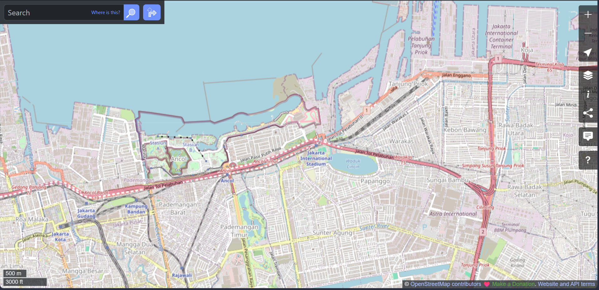

Peta Fasilitas Umum
Peta WebGIS interaktif menampilkan sebaran fasilitas umum di Jakarta Utara beserta penilaiannya.
Catatan: Peta masih dummy, akan dihubungkan ke OSM & GeoMAPID nanti.

🧭 Peta WebGIS — Wilayah
Jakarta Utara
Rekap Rating Fasilitas
| No | Nama Fasilitas | Kecamatan | Kategori | Rating |
|---|---|---|---|---|
| 1 | Taman Kota Tanjung Priok | Tanjung Priok | Ruang Terbuka Hijau | ★★★★☆ |
| 2 | Halte Bus Sunter | Tanjung Priok | Transportasi | ★★★☆☆ |
| 3 | Toilet Umum Kelapa Gading | Kelapa Gading | Sanitasi | ★★☆☆☆ |
| 4 | RTH Marunda | Cilincing | Ruang Terbuka Hijau | ★★★★★ |
| 5 | Pelataran Pejalan Kaki Penjaringan | Penjaringan | Pedestrian | ★★★☆☆ |
Beri Rating Fasilitas
Bagikan penilaian Anda terhadap fasilitas umum yang pernah dikunjungi.